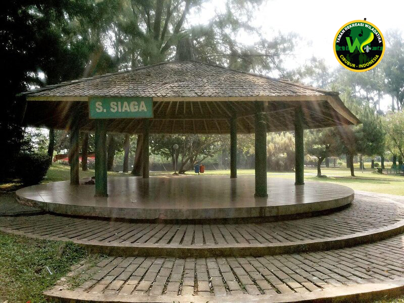
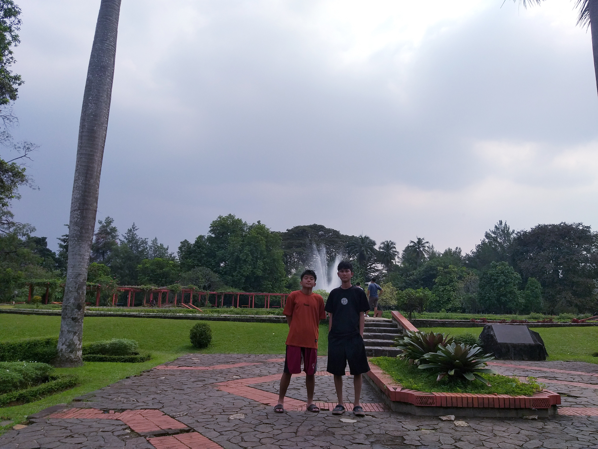

Taman Rekreasi Wiladatika merupakan objek wisata buatan yang terletak di Jalan Jambore No. 1, Harjamukti, Kecamatan Cimanggis, Kota Depok, Jawa Barat. Taman ini diresmikan oleh Presiden Soeharto pada 29 Juni 1980. Pada awalnya, Taman Wiladatika dibangun sebagai tempat rekreasi dan sarana kegiatan kepramukaan. Seiring perkembangannya, taman ini juga dimanfaatkan sebagai tempat rekreasi dan ruang kegiatan bagi masyarakat umum. Taman Wiladatika memiliki kawasan yang cukup luas dengan lingkungan yang didominasi pepohonan, tanaman hias, taman bunga, serta berbagai fasilitas rekreasi. Kondisi tersebut membuat kawasan ini memiliki suasana yang hijau dan teduh. Taman Wiladatika dapat digunakan untuk berbagai kegiatan, seperti rekreasi keluarga, bermain, berolahraga, berkumpul, dan mengadakan kegiatan kelompok.

Taman Wiladatika memiliki beberapa bagian dengan fungsi yang berbeda. Salah satu daya tariknya adalah taman bunga yang berisi berbagai tanaman hias yang ditata secara teratur. Di kawasan ini juga terdapat pepohonan berukuran besar dan air mancur yang menambah keindahan serta memberikan suasana yang teduh. Area bermain anak menyediakan beberapa permainan, seperti ayunan, perosotan, dan jungkat-jungkit. Selain itu, terdapat fasilitas olahraga dan kolam renang yang dapat digunakan untuk kegiatan rekreasi dan aktivitas fisik. Penggunaan kolam renang dikenakan biaya tambahan. Berdasarkan informasi yang tersedia, tarifnya sekitar Rp20.000–Rp25.000 per orang. Taman Wiladatika juga memiliki saung atau gazebo yang dapat digunakan untuk beristirahat dan berkumpul. Harga sewa saung yang tercantum dalam beberapa sumber mulai dari sekitar Rp220.000, bergantung pada jenis dan lama penggunaan. Tersedia pula ruang pertemuan dan gedung serbaguna untuk kegiatan kelompok, organisasi, dan acara tertentu. Biaya sewanya bergantung pada jenis gedung, kapasitas, dan durasi penggunaan. Bagi pengunjung yang membawa kendaraan, tersedia area parkir. Tarif parkir tersebut sekitar Rp5.000 untuk sepeda motor, Rp10.000 untuk mobil, dan Rp20.000 untuk bus dan harga tiket masuk tersebut sekitar Rp.10.000 per orang. Selain fasilitas tersebut, Taman Wiladatika memiliki penginapan yang dapat digunakan untuk kegiatan yang membutuhkan waktu lebih dari satu hari. Tersedianya berbagai fasilitas tersebut membuat kawasan ini dapat digunakan untuk rekreasi maupun kegiatan kelompok.
Taman Wiladatika memberikan manfaat bagi masyarakat dan lingkungan. Dari segi lingkungan, keberadaan pepohonan dan tanaman di kawasan taman menyediakan ruang terbuka hijau di tengah lingkungan perkotaan. Pepohonan juga memberikan keteduhan sehingga kawasan menjadi lebih nyaman untuk digunakan sebagai tempat beraktivitas. Dari segi sosial, Taman Wiladatika berfungsi sebagai tempat rekreasi dan ruang berkumpul bagi masyarakat. Pengunjung dapat melakukan berbagai kegiatan, seperti berjalan-jalan, bermain, berolahraga, bersantai, dan berkumpul bersama keluarga. Fasilitas yang tersedia juga memungkinkan taman digunakan untuk kegiatan kelompok dan organisasi. Taman Wiladatika juga memiliki nilai sejarah karena telah berdiri dan digunakan sebagai tempat rekreasi serta kegiatan kepramukaan sejak tahun 1980. Keberadaannya menunjukkan bahwa kawasan tersebut tidak hanya memiliki fungsi rekreasi, tetapi juga memiliki peran dalam kegiatan sosial dan kepramukaan.
Berdasarkan hasil observasi, Taman Rekreasi Wiladatika merupakan objek wisata buatan yang memiliki lingkungan hijau dan berbagai fasilitas untuk menunjang kegiatan rekreasi maupun kegiatan kelompok. Fasilitas yang tersedia meliputi taman bunga, air mancur, area bermain anak, kolam renang, fasilitas olahraga, saung atau gazebo, penginapan, ruang pertemuan, dan gedung serbaguna. Taman Wiladatika memiliki manfaat sebagai tempat rekreasi, ruang terbuka hijau, tempat berkumpul, dan lokasi berbagai kegiatan masyarakat. Biaya kunjungan dan penggunaan fasilitas berbeda-beda sesuai dengan fasilitas yang dipilih. Dengan lingkungan yang hijau serta fasilitas yang beragam, Taman Wiladatika menjadi salah satu tempat rekreasi yang dapat dimanfaatkan oleh masyarakat di Kota Depok dan sekitarnya.
